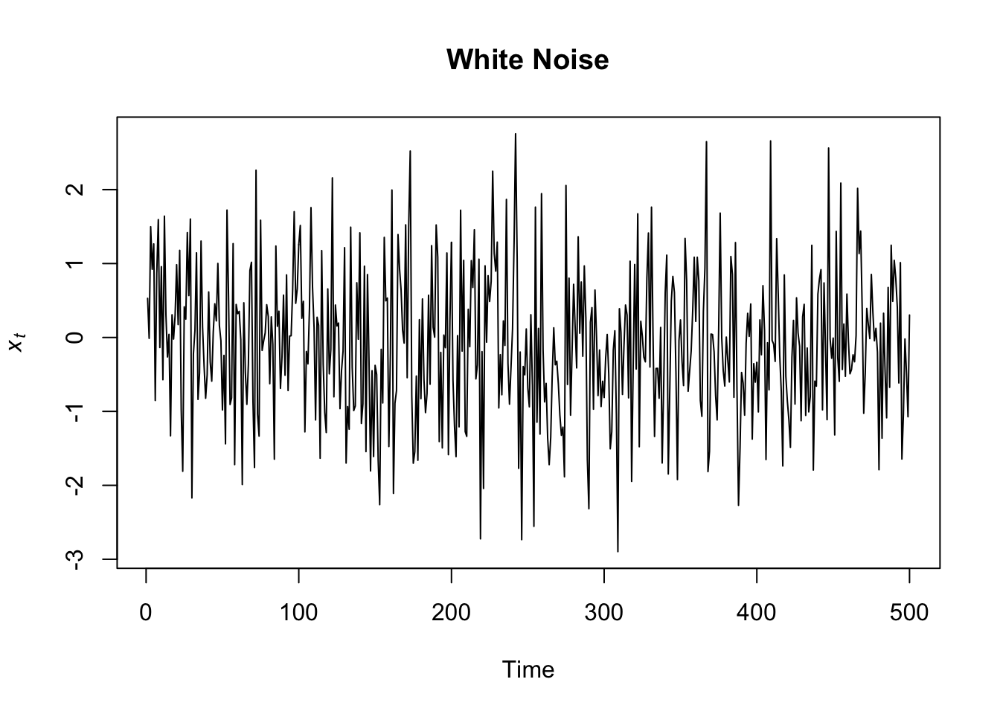
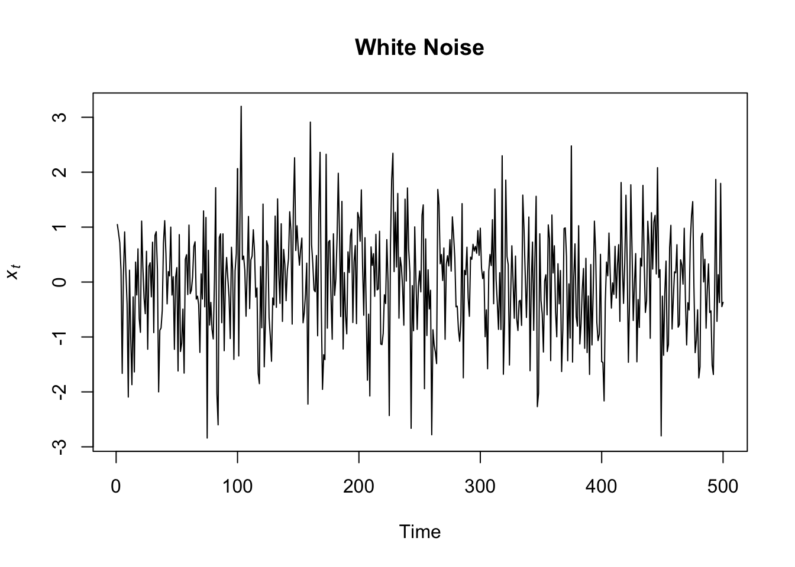

Chapter 4 Time Series Objects
Load the dataset “AirPassengers”, which is already present in R, by using the function “data”.
You can see the standard structure of this time series dataset below. This is a univariate time series representing monthly totals of international airline passengers from 1949 to 1960.
## Jan Feb Mar Apr May Jun Jul Aug Sep Oct Nov Dec
## 1949 112 118 132 129 121 135 148 148 136 119 104 118
## 1950 115 126 141 135 125 149 170 170 158 133 114 140
## 1951 145 150 178 163 172 178 199 199 184 162 146 166
## 1952 171 180 193 181 183 218 230 242 209 191 172 194
## 1953 196 196 236 235 229 243 264 272 237 211 180 201
## 1954 204 188 235 227 234 264 302 293 259 229 203 229
## 1955 242 233 267 269 270 315 364 347 312 274 237 278
## 1956 284 277 317 313 318 374 413 405 355 306 271 306
## 1957 315 301 356 348 355 422 465 467 404 347 305 336
## 1958 340 318 362 348 363 435 491 505 404 359 310 337
## 1959 360 342 406 396 420 472 548 559 463 407 362 405
## 1960 417 391 419 461 472 535 622 606 508 461 390 432Every R object belongs to a “class” of object. You can use the function “class” to find the class of an object. The class of a standard time series objects is “ts”, which stands for time series.
## [1] "ts"Every time series has a start and an end date. It has also a frequency, that is the frequency at which the observations were taken. Importantly, the frequency is assumed to be regular over time. For instance, this series starts on January 1949 (use the function start() to see it) and ends on December 1969 (use the function end() to see it). The frequency is monthly, equal to 12 months (use the function frequency() to see it).
## [1] 1949## [1] 1960## [1] 124.1 Plot Time Series Objects
To plot a ts object you can simply rely on the function plot(), or better, the function plot.ts(), more appropriate for time series objects.
In the function plot.ts you can specify a label for the y axis, (ylab=“your label”), and also for the x axis, if you want (xlab=“your label”).

The function plot.ts() has many arguments and you can use them to customize your plot. To see how the function works and how you can customize your plots, just write ?plot.ts in the console and read the help section.
For instance, we can give the plot a title, set the axis labels, the color (use colors() to see the list of standard colors in R) and the size of the line.
plot.ts(AirPassengers,
main = "PASSENGERS",
ylab = "Passengers (1000's)", xlab = "Time (1949-1960 monthly data)",
col = "steelblue2",
lwd=5)
4.2 Create Time Series Object
Let’s create a time series object starting from a sample of data retrieved from Media Cloud, an online free tool that monitors many online news media. We searched the keyword “elections” on a sample of US online news media.
First, we upload the data with the function read.csv()
We can check the nature of our dataset by using the function str(), which stands for “structure”. We can see that the object is a “data.frame”, it has 4 variables: a factor variable (date), two integer variables (count and total_count), and a numeric variable (ratio).
## 'data.frame': 2192 obs. of 4 variables:
## $ date : Factor w/ 2192 levels "2015-01-01","2015-01-02",..: 1 2 3 4 5 6 7 8 9 10 ...
## $ count : int 373 387 289 322 567 626 507 521 531 346 ...
## $ total_count: int 25611 31932 24646 25513 39982 42366 45163 44928 44041 29093 ...
## $ ratio : num 0.0146 0.0121 0.0117 0.0126 0.0142 ...4.2.1 Handle Dates and Times
Although it does not necessarily give problems, it’s not the best solution having a date variable coded as a factor. The most appropriate format for date variables is the format “date”. Since date and time are a very important variable in time series analysis, it is important to learn to handle them correctly. We convert the format of the date column to “Date” through the function as.Date(), specifying the format of our date.
## 'data.frame': 2192 obs. of 4 variables:
## $ date : Date, format: "2015-01-01" "2015-01-02" "2015-01-03" "2015-01-04" ...
## $ count : int 373 387 289 322 567 626 507 521 531 346 ...
## $ total_count: int 25611 31932 24646 25513 39982 42366 45163 44928 44041 29093 ...
## $ ratio : num 0.0146 0.0121 0.0117 0.0126 0.0142 ...R use specific codes for formatting dates and times (you can read about it at the following link: https://www.stat.berkeley.edu/~s133/dates.html).
You can also change the format of the date by using the function format() and specifying the appropriate codes. Let’s pick up 5 dates at random and let’s apply the function. We also store the variables we create in a data.frame (just for a better visualization). You can see that the format of the date changes to factor, but the transformation could be useful in certain circumstances.
dates_example <- sample(elections_news$date, size = 5)
data.frame("Format_1" = dates_example,
"Format_2" = format(dates_example,"%d/%m/%Y"),
"Format_3" = format(dates_example,"%A, %B %d (%Y)"))## Format_1 Format_2 Format_3
## 1 2019-10-03 03/10/2019 Thursday, October 03 (2019)
## 2 2015-06-19 19/06/2015 Friday, June 19 (2015)
## 3 2016-12-28 28/12/2016 Wednesday, December 28 (2016)
## 4 2018-09-09 09/09/2018 Sunday, September 09 (2018)
## 5 2015-09-05 05/09/2015 Saturday, September 05 (2015)Just to make an example with date and times, we upload the following file. Let`s set aside for now that the series is not regular, and focus just on the format of the date_time variable.
## date_time score
## 1 2012-01-08 21:39:15 0.004061633
## 2 2012-01-10 22:07:54 0.150770079
## 3 2012-01-14 11:15:14 0.457829612
## 4 2012-01-16 18:30:46 0.485773450
## 5 2012-01-18 12:16:56 0.121030670
## 6 2012-01-19 16:03:07 0.465606862If we use the function as.Date() on this data, we get a date without the hours.
## [1] "2012-01-08" "2012-01-10" "2012-01-14" "2012-01-16" "2012-01-18" "2012-01-19"To represent calendar dates and times properly, we can use the function as.POSIXct(). We can set also the appropriate time zone (tz). A time zone is a designated area of the globe that observes a uniform standard time (https://en.wikipedia.org/wiki/Time_zone)
date_time_example$date_time <- as.POSIXct(date_time_example$date_time, tz="UTC")
str(date_time_example)## 'data.frame': 100 obs. of 2 variables:
## $ date_time: POSIXct, format: "2012-01-08 21:39:15" "2012-01-10 22:07:54" "2012-01-14 11:15:14" "2012-01-16 18:30:46" ...
## $ score : num 0.00406 0.15077 0.45783 0.48577 0.12103 ...Once converted in POSIXct format, we can round or truncate our date time by minutes, hours, and days, if we want. We also need to apply again the function as.POSIXct().
By ispecting the results is easy to understand the difference between “round” and “trunc”.
date_time_example$round_mins <- as.POSIXct(round(date_time_example$date_time, "mins"))
date_time_example$trunc_mins <- as.POSIXct(trunc(date_time_example$date_time, "mins"))
date_time_example$round_hours <- as.POSIXct(round(date_time_example$date_time, "hours"))
date_time_example$trunc_hours <- as.POSIXct(trunc(date_time_example$date_time, "hours"))
date_time_example$round_days <- as.POSIXct(round(date_time_example$date_time, "days"))
date_time_example$trunc_days <- as.POSIXct(trunc(date_time_example$date_time, "days"))
date_time_example$round_months <- as.POSIXct(round(date_time_example$date_time, "months"))
date_time_example$trunc_months <- as.POSIXct(trunc(date_time_example$date_time, "months"))
date_time_example$round_years <- as.POSIXct(round(date_time_example$date_time, "years"))
date_time_example$trunc_years <- as.POSIXct(trunc(date_time_example$date_time, "years"))
head(as_tibble(date_time_example))## # A tibble: 6 x 12
## date_time score round_mins trunc_mins round_hours trunc_hours
## <dttm> <dbl> <dttm> <dttm> <dttm> <dttm>
## 1 2012-01-08 21:39:15 0.00406 2012-01-08 21:39:00 2012-01-08 21:39:00 2012-01-08 22:00:00 2012-01-08 21:00:00
## 2 2012-01-10 22:07:54 0.151 2012-01-10 22:08:00 2012-01-10 22:07:00 2012-01-10 22:00:00 2012-01-10 22:00:00
## 3 2012-01-14 11:15:14 0.458 2012-01-14 11:15:00 2012-01-14 11:15:00 2012-01-14 11:00:00 2012-01-14 11:00:00
## 4 2012-01-16 18:30:46 0.486 2012-01-16 18:31:00 2012-01-16 18:30:00 2012-01-16 19:00:00 2012-01-16 18:00:00
## 5 2012-01-18 12:16:56 0.121 2012-01-18 12:17:00 2012-01-18 12:16:00 2012-01-18 12:00:00 2012-01-18 12:00:00
## 6 2012-01-19 16:03:07 0.466 2012-01-19 16:03:00 2012-01-19 16:03:00 2012-01-19 16:00:00 2012-01-19 16:00:00
## # … with 6 more variables: round_days <dttm>, trunc_days <dttm>, round_months <dttm>, trunc_months <dttm>, round_years <dttm>,
## # trunc_years <dttm>4.2.2 Aggregate Observations
Besides analyzing the structure, To familiarize with a dataset we can display the first few rows with the function head(). As you can see in the column date we have a time series with daily frequency.
## date count total_count ratio
## 1 2015-01-01 373 25611 0.01456405
## 2 2015-01-02 387 31932 0.01211950
## 3 2015-01-03 289 24646 0.01172604
## 4 2015-01-04 322 25513 0.01262102
## 5 2015-01-05 567 39982 0.01418138
## 6 2015-01-06 626 42366 0.01477600As said above, the frequency at which the observations were taken is assumed to be regular over time. However, very often the data are incomplete, or the frequency can be not constant due to leap years (with 366 days instead of 365).
In this first example, to keep things simple, we aggregate observations into monthly groups. We will see two strategies. The first one makes use of standard R function, the second one will use the library tidyverse.
4.2.2.1 Base R Approach
First we instruct R to treat the “date” column as a “Date” object, which is the most correct data type for dates. Then we create another column named “month”, manipulating the dates in order to keep just years and months. We also create a column year, just to check how many months of data we have each year by using the function “aggregate”.
elections_news$date <- as.Date(elections_news$date, format="%Y-%m-%d")
elections_news$month <- format(elections_news$date, "%Y-%m")
elections_news$year <- format(elections_news$date, "%Y")
aggregate(month ~ year, data=elections_news, FUN = function(x) length(unique(x)))## year month
## 1 2015 12
## 2 2016 12
## 3 2017 12
## 4 2018 12
## 5 2019 12
## 6 2020 12Finally, we use, again, the function “aggregate” to calculate the average proportion of news articles by month, creating a new dataset called “elections_news_monthly”, with a column “month” and another column “count” (the number of news articles).
We use the ratio value because the number of newspapers included in the collections could change over time, so by using the ratio value we account for possible changes in count of news articles determined just by changes in newspapers number and not in the news coverage of the topic.
4.2.2.2 Tidyverse approach
library(tidyverse)
elections_news %>%
mutate(date = as.Date(date)) %>%
mutate(month = format(date, "%Y-%m"),
year = format(date, "%Y")) %>%
select(year, month) %>%
unique() %>%
group_by(year) %>%
summarize(n=n())## `summarise()` ungrouping output (override with `.groups` argument)## # A tibble: 6 x 2
## year n
## <chr> <int>
## 1 2015 12
## 2 2016 12
## 3 2017 12
## 4 2018 12
## 5 2019 12
## 6 2020 12elections_news_monthly <- elections_news %>%
mutate(date = as.Date(date)) %>%
mutate(month = format(date, "%Y-%m")) %>%
group_by(month) %>%
summarize(ratio = mean(ratio))## `summarise()` ungrouping output (override with `.groups` argument)We can look at the start and end date of the series by using the function “head” and “tail”, indicating to extract just 1 value (the first and the last one).
## [1] "2015-01"## [1] "2020-12"Now we can create our monthly time series object with our news media data on “elections”. We need to specify the column that contains the data, the time of the first and last observation, and the frequency of the data, which in this case is a monthly frequency.
elections_news_monthly_ts <- ts(data = elections_news_monthly$ratio,
start = c(2015, 01), end = c(2020, 12),
frequency = 12)And here it is our brand-new time series ts object.
## Jan Feb Mar Apr May Jun Jul Aug Sep Oct
## 2015 0.012912979 0.013129067 0.013194189 0.011098454 0.010715705 0.009965726 0.009093045 0.010513101 0.011176887 0.013368316
## 2016 0.011572940 0.012884552 0.014020827 0.014176515 0.015142212 0.012419896 0.012352255 0.013319360 0.014525895 0.018165145
## 2017 0.014920648 0.015368007 0.015542559 0.015040222 0.014923517 0.014033210 0.012484787 0.010990920 0.012142076 0.012965708
## 2018 0.014746712 0.016387355 0.019550906 0.018077469 0.020748120 0.018384512 0.020848713 0.020813585 0.023878970 0.031206151
## 2019 0.020930706 0.021663593 0.023481836 0.024754292 0.026618620 0.015513945 0.014032455 0.013579769 0.017183966 0.017279698
## 2020 0.015427546 0.017116988 0.012344645 0.009973017 0.009000833 0.011735883 0.013033643 0.017377946 0.015818565 0.021178313
## Nov Dec
## 2015 0.013037089 0.011173882
## 2016 0.021795226 0.017023243
## 2017 0.015048326 0.015074379
## 2018 0.038497943 0.021428382
## 2019 0.019885423 0.017271081
## 2020 0.027026379 0.015476051We can plot our time series by using the plot.ts function.
plot.ts(elections_news_monthly_ts,
main = "MediaCloud Data on Elections",
ylab="News Articles",
col = "purple3",
lwd = 5)
Now, we save our time series object in the folder “data” for further analysis.
4.3 Irregular Frequencies
Time series point are expected to be regular in time, collected at metronomic intervals. However, this is not always possible.
For instance, if you have a daily time series that spans over many years, you will have leap years with 366 days instead of 365 (by extending February to 29 days rather than the common 28).
## year date
## 1 2015 365
## 2 2016 366
## 3 2017 365
## 4 2018 365
## 5 2019 365
## 6 2020 366The standard time series library in R does not work well with daily time series. It works fine with yearly, monthly, quarterly data. There are other time series analysis libraries in R, for instance “xts”, but to perform some analyses regular intervals are mandatory.
To regularize the time series you might choose to delete a data point, or to aggregate daily data by months, as we have done above.
If we just want to plot a daily time series we can simply use ggplot2. We can use our original dataset, which is a “data.frame” object.
## [1] "data.frame"ggplot(elections_news, aes(x = date, y = ratio)) +
geom_line(col = "gold2",
size = 0.5) +
ylab("News Articles") +
ggtitle("MediaCloud Data on Elections (Daily)")
4.4 Incomplete Data Points
Another problem we often have to deal with when we analyze time series is related to incomplete data points. In this case we need to complete the data.
First of all we need to create the missing date-time slots, if there are any. We are going to fill them with 0 since we consider that point missing just because they have zero events in them. However, this is not necessarily the case, and if they are missing for other reason we should fill them with NA and choose an approach to handle them.
For instance, the following time series lacks the first four days of the first year of data. Not only the data are missing, but also the time slots.
## date count total_count ratio month year
## 5 2015-01-05 567 39982 0.01418138 2015-01 2015
## 6 2015-01-06 626 42366 0.01477600 2015-01 2015
## 7 2015-01-07 507 45163 0.01122600 2015-01 2015
## 8 2015-01-08 521 44928 0.01159633 2015-01 2015
## 9 2015-01-09 531 44041 0.01205695 2015-01 2015
## 10 2015-01-10 346 29093 0.01189290 2015-01 2015To create the necessary time slots, we can use the function complete() in the package “tidyverse”.
elections_news_complete <- elections_news_incomplete %>%
complete(date = seq(as.Date("2015-01-01"), max(date), by = "1 day")) %>%
mutate(ratio = ifelse(is.na(ratio), 0, ratio))Now we can plot our completed time series using the ggplot() function. You can just copy the previous code and change some parameters (first of all the name of the dataset).
ggplot(elections_news_complete, aes(x = date, y = ratio)) +
geom_line(col = "blue", size = 0.75) +
ylab("News Articles") +
ggtitle("MediaCloud Data on Elections (Daily)")
4.5 Plot Many Time Series
You can also plot two time series together. This could be useful to have a look at their possible relations. The two time series must have the same starting date, the same ending date, and the same frequency.
In base R, the time series have to be merged in one “ts” object by using the function ts.union(). You can plot both the time series in the same plot, or create two different plot, by using the option “plot.type”.
AirPassengers_2 <- sample(x = length(AirPassengers))
AirPassengers_two_series <- ts.union(AirPassengers, AirPassengers_2)
plot.ts(AirPassengers_two_series,
main = "MediaCloud Data on Elections (Daily)\nand Random Sample",
col = c("blue", "red"),
lty=c(1, 1), lwd=c(1, 1),
plot.type = "single")
plot.ts(AirPassengers_two_series,
main = "MediaCloud Data on Elections (Daily)\nand Random Sample",
col = "blue",
lty=1, lwd=1,
plot.type = "multiple")
To plot the series with ggplot2, we can use a code like the following.
ggplot(elections_news) +
geom_line(aes(x = date, y = ratio), col = "black", size = 0.5) +
geom_line(aes(x = date, y = count/100000), col="red", size=0.5) +
ylab("News Articles") +
xlab("Date") +
ggtitle("MediaCloud Data on Elections (Daily)") 
p1 <- ggplot(elections_news) +
geom_line(aes(x = date, y = ratio), col = "black", size = 0.5) +
ylab("News Articles") +
xlab("Date") +
ggtitle("MediaCloud Data on Elections (Daily)")
p2 <- ggplot(elections_news) +
geom_line(aes(x = date, y = count), col="red", size=0.5) +
ylab("News Articles") +
xlab("Date") +
ggtitle("MediaCloud Data on Elections (Daily)")
gridExtra::grid.arrange(p1,p2)
4.6 Find and Annotate Peaks
Plotting a time series has an important role in a preliminary phase of the analysis, which consists in a first exploration of the data.
A very common and interesting step in the analysis of time series data is the detection of peaks, data point that have a very high value compared to the others. When studying social and communications phenomena, these unexpected change in the process that characterizes a time series, attract our attention and requires an explanation. Often, peaks are associated with some external phenomena that had an impact on the time series. It is a common practice to detect these peak and label the time series plot with a few words indicating the phenomenon with which the peak is, most probably, associated with.
For instance, with our daily time series data of news on elections, we might be interested in detecting and labelling the highest peak.
First, we extract the highest value .
## date count total_count ratio month year
## 1 2018-11-06 9529 98704 0.09654117 2018-11 2018To create the annotation in ggplot we use the function “annotate”, to label the data point, and “geom_segment”, to trace a line that connects the data point with the label.
ggplot(elections_news) +
geom_line(aes(x = date, y = ratio), col = "black", size = 0.5) +
ylab("News Articles") +
xlab("Date") +
ylim(c(0, 0.150)) +
ggtitle("MediaCloud Data on Elections (Daily)") +
# annotation
annotate("label", x = as.Date("2018-11-06"), y = 0.130, label = "Highest Peak\n2018-11-06",
color = "#FC4E07", fontface="bold", size=3) +
# arrow
geom_segment(arrow = arrow(length = unit(0.2, "cm"), ends = "first"),
aes(x = as.Date("2018-11-06"), y = 0.1,
xend = as.Date("2018-11-06"), yend = 0.120),
color = "#FC4E07", size = 0.2, linetype = 1) 
To make another example, by using the formatting functions we have seen above, we transform the time series in a monthly time series, than we annotate the 4 highest peaks. We use a tidyverse approach.
elections_news_monthly <- elections_news %>%
mutate(date_month = as.POSIXct(trunc(as.POSIXct(date), "month"))) %>%
group_by(date_month) %>%
summarize(ratio = mean(ratio))## `summarise()` ungrouping output (override with `.groups` argument)## # A tibble: 4 x 2
## date_month ratio
## <dttm> <dbl>
## 1 2018-11-01 00:00:00 0.0385
## 2 2018-10-01 00:00:00 0.0312
## 3 2020-11-01 00:00:00 0.0270
## 4 2019-05-01 00:00:00 0.0266ggplot(elections_news_monthly) +
geom_line(aes(x = date_month, y = ratio), col = "skyblue2", size = 1) +
ylab("News Articles") +
xlab("Date") +
ylim(c(0, 0.120)) +
ggtitle("MediaCloud Data on Elections (Monthly)") +
annotate("label", x = as.POSIXct("2018-11-01"), y = 0.1, label = "Highest Peak 1\n2018-11",
color = "#FC4E07", fontface="bold", size=3) +
geom_segment(arrow = arrow(length = unit(0.2, "cm"), ends = "first"),
aes(x = as.POSIXct("2018-11-01"), y = 0.043,
xend = as.POSIXct("2018-11-01"), yend = 0.090),
color = "#FC4E07", size = 0.2, linetype = 1) +
annotate("label", x = as.POSIXct("2018-04-01"), y = 0.08, label = "Highest Peak 2\n2018-10",
color = "#FC4E07", fontface="bold", size=3) +
geom_segment(arrow = arrow(length = unit(0.2, "cm"), ends = "first"),
aes(x = as.POSIXct("2018-10-01"), y = 0.036,
xend = as.POSIXct("2018-04-01"), yend = 0.07),
color = "#FC4E07", size = 0.2, linetype = 1) +
annotate("label", x = as.POSIXct("2020-09-01"), y = 0.06, label = "Highest Peak 3\n2020-11",
color = "#FC4E07", fontface="bold", size=3) +
geom_segment(arrow = arrow(length = unit(0.2, "cm"), ends = "first"),
aes(x = as.POSIXct("2020-11-01"), y = 0.032,
xend = as.POSIXct("2020-09-01"), yend = 0.05),
color = "#FC4E07", size = 0.2, linetype = 1) +
annotate("label", x = as.POSIXct("2019-06-01"), y = 0.05, label = "Highest Peak 4\n2019-05",
color = "#FC4E07", fontface="bold", size=3) +
geom_segment(arrow = arrow(length = unit(0.2, "cm"), ends = "first"),
aes(x = as.POSIXct("2019-05-01"), y = 0.031,
xend = as.POSIXct("2019-06-01"), yend = 0.04),
color = "#FC4E07", size = 0.2, linetype = 1)